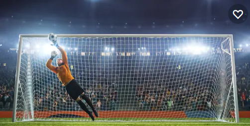

The Pitch

The Ball

Goal Post
FOOTBALL
Football is a team sport played with a spherical ball between two teams of 11 players. It is played by approximately 250 million players in over 200 countries and dependencies, making it the world's most popular sport. The game is played on a rectangular field called a pitch with a goal at each end. The object of the game is to outscore the opposition by moving the ball beyond the goal line into the opposing goal. The team with the higher number of goals wins the game.
Football is played in accordance with a set of rules known as the Laws of the Game. The ball is 68–70 cm (27–28 in) in circumference and known as the football. The two teams each compete to get the ball into the other team's goal, thereby scoring a goal. The team that has scored more goals at the end of the game is the winner; if both teams have scored an equal number of goals then the game is a draw. Each team is led by a captain who has only one official responsibility as mandated by the Laws of the Game: to represent their team in the coin toss prior to kick-off or penalty kicks.
Players are not allowed to touch the ball with hands or arms while it is in play, except for the goalkeepers within the penalty area. Other players mainly use their feet to strike or pass the ball, but may also use any other part of their body except the hands and the arms.